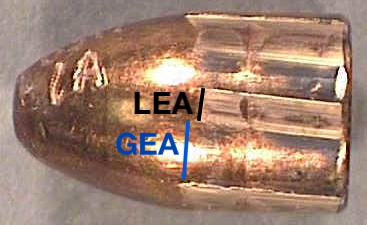
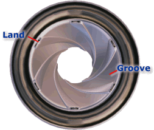

Terms are given in the order in which they appear in the body of the text.
Introduction
A.1 : Forensics - The art or study of argumentation and formal debate.
Source: dictionary.com
A.4 : Integrated Development Environment (IDE) - An IDE increases programmer productivity by combining common activities of writing software into a single application: editing source code, building executables, and debugging.
Source: Codecademy
A.5 : Open Source Software - Open source software is software with source code that anyone can inspect, modify, and enhance.
Source: opensource.com
A.6 : Proprietary - Of a brand name, product, service, formula, etc.: protected by a patent, copyright, or trademark.
Source: dictionary.com
A.7 : Source Code - The part of software that most computer users don’t ever see; it’s the code computer programmers can manipulate to change how a piece of software—a “program” or “application”—works.
Source: opensource.com
A.8 : Evidence - Data presented to a court or jury in proof of the facts in issue and which may include the testimony of witnesses, records, documents, or objects.
Source: dictionary.com
A.9 : Score - The quanitification of similarity between two items via a univariate function meant to inform whether the two items have a common source.
Source: Hepler et al. (2012)
A.10 : Likelihood Ratio - Statistical measurement evaluating the probability of evidence under one hypotheis, divided by the probability of evidence under an alternative, mutually exclusive hypothesis. In forensic science, the value of the likelihood ratio expresses the weight and meaning of scientific evidence and is used as a measure of probative value.
Source: CSAFE
Validation of DNA Interpretation Systems
A.11 : DNA profiling - A method of identifying an individual through comparison of patterns arising from differences in DNA sequences, represented as a string of values compiles from the results of DNA testings at one or more genetic markers.
Source: Butler (2009)
A.12 : Polymerase Chain Reaction (PCR) - An
in vitro process that yields millions of copies of desired DNA through repeated cycling of a reaction involving the DNA polymerase enzyme.
Source: Butler (2009)
A.13 : Short Tandem Repeats (STRs) - Multiple copies of an identical DNA sequence arranged in direct succession where the repeat sequence unit is 2 to 6 base pairs in length.
Source: Butler (2009)
A.14 : Single Nucleotide Polymorphism (SNP) - Any polymorphic variation at a single nucleotide.
Source: Butler (2009)
A.15 : Mitochondrial DNA (mtDNA) - A small, circular DNA molecule located in the mitocondria that contains approximately 16,500 nucleotides. The abundance of hundreds of copies of mtDNA in each cell make it useful with samples originating from limited or damaged biological material.
Source: Butler (2009)
A.16 : Chromosome - The structure by which hereditary information is physically transmitted from one generation to the next.
Source: Butler (2009)
A.17 : Locus - A unique physical location of a gene (or specific sequence of DNA) on a chromosome. The plural of locus is loci.
Source: Butler (2009)
A.18 : Nucleotide - A unit of nucleic acid composed of phospate, ribose or deoxyribose, and a purine or pyrimidine base
Source: Butler (2009)
A.19 : Nucleic Acid - A general class of molecules that are polymers of nucleotides. DNA and RNA are the major types.
Source: Butler (2009)
A.20 : Database - A comprehensive collection of related data organized forconvenient access, generally in a computer.
Source: dictionary.com
A.21 : Capillary Electrophoresis (CE) - An electrophoretic technique for separating DNA molecules by their size based on migration through a narrow glass capillary tube filled with a liquid polymer.
Source: Butler (2009)
A.22 : Allele - An alternative form of a gene or a section of DNA at a particluar gentic location (locus). Typically, multiple alleles are possible for each STR marker.
Source: Butler (2009)
A.23 : Stutter product - Either (n-4) or (n+4). If (n-4), a minor peak appearing one repeat unit smapper than a primary STR allele resulting from strang slippage during the amplification process. If (n+4), a minor peak appearing one repeat unit larger than a primary STR allele resulting from strand slippage during the amplification process.
Source: Butler (2009)
A.24 : Graphical User Interface (GUI) - A form of user interface that allows users to interact with electronic devices through graphical icons and visual indicators such as secondary notation, instead of text-based user interfaces.
Source: Wikipedia
Firearms: bullets
A.25 : Bullet - A kinetic projectile and the component of firearm ammunition that is expelled from the gun barrel during shooting
Source: Wikipedia
A.26 : Gun Barrel - The straight shooting tube through which a contained rapid expansion of high-pressure gas(es) is introduced behind a projectile in order to propel it out of the front end at a high velocity.
Source: Wikipedia
A.27 : Bullet Striations - Where a bullet is pushed through the barrel of a rifled firearm, spiral grooves cut into the inside of the barrel (rifling) cause the bullet to spin. This allows increased accuracy of the shot. On the way out of the barrel, the bullet also acquires incidental markings, or striations, which may help in identifying the gun which fired a bullet.
Source: CSAFE
A.28 : Breech face - In a firearm, the front part of the breechblock that makes contact with the cartridge. The breechblock is what holds a round in the chamber and absorbs the recoil of the cartridge when the round is fired, preventing the cartridge case from moving.
Source: CSAFE
A.29 : Land engraved areas (LEAs) - The impressions on a bullet from the lands of the barrel. See image at right. 
Source: Scientific American
A.30 : Groove engraved areas (GEAs) - The impressions on a bullet from the grooves of the barrel. See image at right.
Source: Scientific American
A.31 : Metrology - The science of weights and measures.
Source: dictionary.com
A.33 : Lands and Grooves - The lands are the raised areas between two grooves in the barrel of a firearm. See image at right. 
Source: FirearmsID.com
A.34 : Cross-Correlation - A measure of similarity of two series as a function of the displacement of one relative to the other.
Source: Wikipedia
A.35 : Consecutively Matching Striae - Striated markings that line up exactly with one another without a break or dissimilarity in between them
(Biasotti 1959). This and other forensic science papers using CMS typically count a single peak as a striae, while we count peaks and valleys, so our definition typically yields CMS values about twice those commonly found in the literature.
Source: E. R. Hare (2017)
A.36 : Non-matching Striation Count - Striated markings that do not line up exactly with another, without matching striation between them.
Source: E. R. Hare (2017)
A.37 : Cross-Correlation Function Value - The maximum value of the Cross-Correlation function evaluated at the optimal alignment.
Source: E. R. Hare (2017)
A.38 : Sequence Average Matching (SAM) - Using the CCF value between 2 lands, compute the average CCF value across all sequences of comparisons. The sequence with the highest average value is the “matching” sequence. If this value is greater than 0.5, then the bullets are declared to “match”.
Source: Sensofar Metrology
Firearms: casings
A.39 : Cartridge case -

See image at right. A pre-assembled firearm ammunition packaging a projectile (1), a propellant substance (3) and an ignition device within a metallic, paper or plastic case (2) that fits within the barrel chamber of a breechloading gun, for the practical purpose of convenient transportation and handling during shooting.
Source: Wikipedia
A.40 : Firing Pin - A part of the firing mechanism used in a firearm or explosive device. Firing pins used in firearms usually have a small, rounded portion designed to strike the primer of a cartridge, detonating the priming compound, which then ignites the propellant (inside) or fires the detonator and booster.
Source: Wikipedia
A.41 : Primer - A metal cup containing a primary explosive inserted into a recess in the center of the base of the cartridge.
Source: Wikipedia
A.42 : Individualize - Theoretically, a determination that two samples derive from the same source; practically, a determination that two samples derive from sources that cannot be distinguished at the level of analysis possible in the comparison process.
Source: OSAC Lexicon
A.43 : Pistol slide - A part on semi-automatic pistols that moves during the operating cycle and generally houses the firing pin/striker and the extractor, and serves as the bolt. It is spring-loaded so that once it has moved to its rearmost position in the firing cycle, spring tension brings it back to the starting position chambering a fresh cartridge during the motion provided that the magazine is not empty.
Source: Wikipedia
Latent Fingerprints
A.44 : Latent fingerprint - A fingerprint left on a surface by deposits of oils and/or perspiration from the finger. It is not usually visible to the naked eye but may be detected with special techniques such as dusting with fine powder and then lifting the pattern of powder with transparent tape.
Source: USLegal.com
A.45 : Minutiae - The points where the ridge lines in a fingerprint end or fork. They can be of many types, such as ridge ending, ridge bifurcation, or crossovers.
Source: Bayometric
A.46 : Patent Prints - Patent prints are those fingerprints that are easily spotted without the use of magnesium powders, ultra violet lights or chemicals that might assist in the visualisation of such a print. Patent prints are often found perhaps in blood, ink, oil or on surfaces such as glass, wooden doorframes or paper.
Source: Explore Forensics
A.47 : Exemplar Prints - Exemplar prints, or known prints, is the name given to fingerprints deliberately collected from a subject, whether for purposes of enrollment in a system or when under arrest for a suspected criminal offense. During criminal arrests, a set of exemplar prints will normally include one print taken from each finger that has been rolled from one edge of the nail to the other, plain (or slap) impressions of each of the four fingers of each hand, and plain impressions of each thumb. Exemplar prints can be collected using live scan or by using ink on paper cards.
Source: Wikipedia
Shoe Outsole Impression Evidence
A.48 : Shoe Outsole - The part of the shoe that is in direct contact with the ground
Source: Wikipedia
A.49 : Adhesive Lifter - Any material coated with a tacky substance for the purpose of lifting footwear or fingerprint impressions.
Source: SWGTREAD
A.50 : Electrostatic Lifting - The process of using an electrostatic charge to transfer dry
origin impressions from the substrate to a film.
Source: SWGTREAD
A.51 : Cast - The result of filling a three-dimensional impression with an appropriate material
Source: SWGTREAD
A.52 : Class Characteristics - Distinctive features shared by many items of the same type. This could be a result from a manufacturing process, such as physical size, design and mold characteristics. Class characteristics can determine to which group an item belongs but does not discriminate one item in a group from another item in the same group.
Source: CSAFE
A.53 : Summary statistic - A value which summarizes a set of observations in order to communicate the largest amount of information as simply as possible.
Source: Wikipedia
A.54 : Subclass Characteristics - Features that may be produced during manufacturing that are consistent among items created by the same material in the same approximate state of wear. For example, all guns manufactured right before sharpening or cleaning the machinery. Sub-class characteristics are more restrictive than class characteristics and are not determined prior to manufacturing.
Source: CSAFE
A.55 : Randomly Acquired Characteristics (RACs) - Identifying characteristics that do not result from the manufacturing process, but are accidental, unpredictable characteristics that result from wear. These could include objects that have become attached to the outsole of a shoe—such as rocks, thumb tacks, or tape—or marks on a bullet or casing caused by lack of cleaning of a gun.
Source: CSAFE
A.56 : Maximal Clique - Given a group of vertices (points) some of which have edges (lines) in between them, the maximal clique is the largest subset of vertices in which each point is directly connected to every other vertex in the subset.
Source: Stanford Computer Science
Trace Glass Evidence
A.57 : Questioned Source - Evidence of unknown origin. These samples could be found at a crime scene, transferred to an offender during commission of a crime, or recovered from more than one crime scene.
Source: forensicsciencesimplified.org
A.58 : Known Source - Also called a reference sample, this is material from a verifiable/documented source which, when compared with evidence of a questioned source, shows an association or linkage between an offender, crime scene, and/or victim.
Source: forensicsciencesimplified.org
A.59 : Specific source question - The specific source identification question considers whether the trace originates from a fixed specific source.
Source: Ommen, Saunders, and Neumann (2015)
A.60 : Refractive Index - A dimensionless number that describes how fast light propagates through a material.
Source: Wikipedia
A.61 : Float Glass - Extremely smooth, nearly distortion-free plate glass manufactured by pouring molten glass onto asurface of molten tin.
Source: dictionary.com
A.62 : ASTM International - An international standards organization that develops and publishes voluntary consensus technical standards for a wide range of materials, products, systems, and services.
Source: Wikipedia
A.63 : Random Forest - An ensemble learning method for classification, regression and other tasks that operates by constructing a multitude of decision trees at training time and outputting the class that is the mode of the classes (classification) or mean prediction (regression) of the individual trees.
Source: Wikipedia
A.64 : Fluorescence - The emission of radiation, especially of visible light, by a substance during exposure to externalradiation, as light or x-rays.
Source: dictionary.com
A.65 : Inductively Coupled Mass Spectrometry with a Laser Add-on (LA-ICP-MS) - A powerful analytical technology that enables highly sensitive elemental and isotopic analysis to be performed directly on solid samples. LA-ICP-MS begins with a laser beam focused on the sample surface to generate fine particles – a process known as Laser Ablation. The ablated particles are then transported to the secondary excitation source of the ICP-MS instrument for digestion and ionization of the sampled mass. The excited ions in the plasma torch are subsequently introduced to a mass spectrometer detector for both elemental and isotopic analysis.
Source: Applied Spectra
A.66 : Machine Learning - The scientific study of algorithms and statistical models that computer systems use to effectively perform a specific task without using explicit instructions, relying on patterns and inference instead
Source: Wikipedia
A.67 : Classifier - An algorithm which takes in data observations and outputs a prediction about which class or group in the population each observation belongs to.
Source: Wikipedia
A.68 : Features - An individual measurable property or characteristic of a phenomenon being observed
Source: Wikipedia
A.69 : Receiver Operating Characteristic Curve - A commonly used summary for assessing the tradeoff between sensitivity (true positive rate) and specificity (true negative rate) of a classifier.
Source: Friedman, Hastie, and Tibshirani (2001)
A.70 : K-fold Cross-Validation - A method to assess performance of a prediction model. This method splits the data up into K parts, fits the model to K-1 parts of the data, then predicts on the leftover part of data K times.
Source: Friedman, Hastie, and Tibshirani (2001)
A.71 : Sensitivity - A measure of performance for a 2 class classifier. It is equal to the true positive rate, the probability of predicting a positive response when the truth is positive.
Source: Friedman, Hastie, and Tibshirani (2001)
A.72 : Specificity - A measure of performance for a 2 class classifier. It is equal to the true negative rate, the probability of predicting a negative response when the truth is negative.
Source: Friedman, Hastie, and Tibshirani (2001)